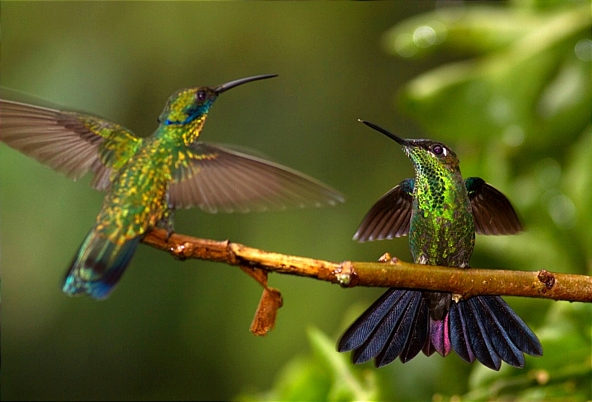

El Archivo Vivo: Sabiduría que Brota de la Tierra
Un viaje al micromundo del bosque nublado de Bejuma
Registro de Especímenes
Documentación técnica de la biodiversidad que habita nuestro refugio forestal.

Greta oto
Conocida como la "mariposa de cristal", sus alas transparentes actúan como camuflaje natural, permitiéndole desaparecer en el denso follaje del bosque nublado.

Dynastes hercules
Uno de los escarabajos más grandes del mundo, fundamental para el ciclo de nutrientes del suelo en Bejuma.

Automeris metzli
Posee ocelos espectaculares en sus alas posteriores que imitan los ojos de un depredador mayor para disuadir ataques.


Biblioteca del Naturalista
"Un saber no compartido es una semilla que nunca germina."
Nuestra colección alberga ejemplares únicos de botánica venezolana y entomología neotropical. Un refugio para el estudio silencioso, donde las páginas de ayer guían la conservación de mañana.
Microclima
760 msnm
Altitud ideal para la proliferación de especies endémicas de montaña.
Observación
140+ Especies
Diversidad aviar y entomológica identificada dentro del archivo vivo.
Certificaciones
ISO 9001
Circuito de la Excelencia
Compromiso riguroso con los estándares internacionales de hospitalidad.
"No somos los dueños de este bosque, somos sus custodios temporales. Cada ala que protegemos hoy es el vuelo que verán nuestros hijos mañana."
Norbert Flauger
Fundador & Visionario de la Conservación